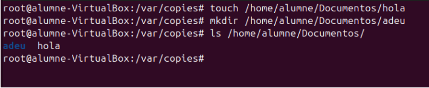
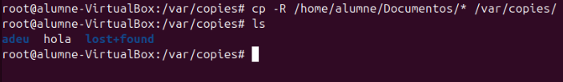
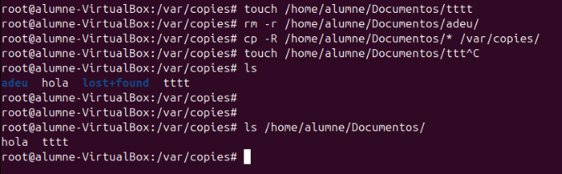
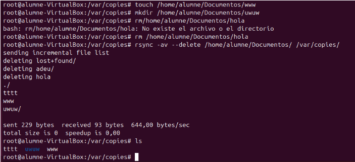
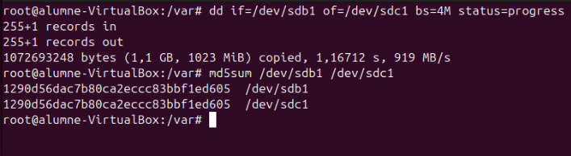

Còpies de seguretat
Què és una còpia de seguretat?
Una còpia de seguretat és una rèplica dels fitxers i dades importants emmagatzemades en un dispositiu o sistema. S'utilitza per prevenir la pèrdua d'informació en cas d'errors, atacs, o danys en el sistema original. Normalment, es guarda en un lloc separat, com un disc extern, un servidor, o el núvol, per garantir la seva seguretat.
Tipus de Còpies de Seguretat
Còpies completes
| Descripció | Avantatges | Desavantatges |
|---|---|---|
| Una còpia de totes les dades seleccionades. | - Es copia i guarda tot. | - Ocupa molt espai d'emmagatzematge. |
| - Independent d'altres còpies per a la restauració. | - Tarda molt a realitzar-se. |
Nota: Només es necessita l'última còpia completa per recuperar les dades.
Còpies diferencials
| Descripció | Avantatges | Desavantatges |
|---|---|---|
| Inclou els canvis des de l'última còpia completa. | - Ocupa menys espai que una còpia completa. | - Necessites l'última còpia completa i l'última còpia diferencial per restaurar les dades. |
| - Més ràpida de crear que una còpia completa. |
Nota: Acumula canvis fins que es realitza una nova còpia completa.
Còpies incrementals
| Descripció | Avantatges | Desavantatges |
|---|---|---|
| Inclou els canvis des de l'última còpia (completa o incremental). | - Ocupa menys espai que una còpia diferencial. | - Necessites l'última còpia completa i totes les còpies incrementals fins al punt de restauració. |
| - La més ràpida de crear. |
Nota: Redueix espai i temps, però requereix més passos per a la recuperació.
Recomanacions
-
Realitza còpies completes periòdicament (per exemple, setmanalment).
-
Completa-les amb còpies diferencials o incrementals diàries per optimitzar l'espai i el temps.
-
Assegura't de provar les còpies de seguretat periòdicament per garantir la seva integritat.
-
Emmagatzema còpies fora del lloc (off-site) per protegir-les contra desastres locals.
Còpies de Seguretat: CP, rsync i DD
Explicació i Taula Comparativa
Les comandes per a la gestió de còpies de seguretat tenen usos específics segons les necessitats. A continuació, es presenta una explicació i una taula comparativa dels principals comandaments:
| Comanda | Descripció | Treball Local | Treball Remot | Intel·ligència (només modifica canvis) |
|---|---|---|---|---|
| cp | Còpia simple, no intel·ligent. Es limita a copiar fitxers o directoris sense optimització. | Sí | No | No |
| rsync | Permet copiar només les modificacions de fitxers, optimitzant espai i temps. Suporta SSH per a còpies remotes. | Sí | Sí | Sí |
| dd | Clonació de discos o particions a nivell de blocs. No és específic per a còpies de seguretat de fitxers. | Sí | No | No |
cp
-
Descripció: La comanda cp és una eina simple per copiar fitxers i directoris.
-
Limitació: No és capaç de reconèixer canvis en els fitxers, per tant, sempre copia tot de nou.
Exemple d'ús:
cp -r /origen /destinació
Paràmetres comuns:
-
-r: Copia recursivament un directori i els seus continguts. -
-u: Només copia fitxers més nous o que no existeixen al destí.
Crearem un directori i un fitxer per a fer aquesta prova.
touch /home/alumne/Documentos/hola
mkdir /home/alumne/Documentos/adeu

Posteriorment, utilitzarem la comanda cp per copiar els fitxers i directoris de /Documentos/ al nou directori.
cp -R /home/alumne/Documents/* /var/copies/
Nota: El símbol asterisc (*) després de /Documentos/ indica que es copiarà tot el que es trobi dins d'aquest directori.

Un punt important és que hem copiat únicament els fitxers i subdirectoris que es trobaven al directori /home/alumne/Documents en el moment de la còpia:

cp -R /home/alumne/Documents/* /var/copies/
Aquesta comanda copia tot el que hi ha al directori /home/alumne/Documents (fitxers i subdirectoris) al directori /var/copies.
Un cop feta la còpia, els fitxers copiat a /var/copies són independents. Això significa que si posteriorment esborrem els fitxers o directoris de /home/alumne/DocumentS, no afectaran la còpia que hem fet a /var/copies.
Aquesta operació crea una còpia segura dels fitxers en un altre directori i no es veu afectada pels canvis posteriors al directori original.
rsync
-
Descripció: rsync és una eina avançada per a còpies de seguretat que només copia els canvis en els fitxers, reduint l'ús de recursos.
-
Avantatges: Permet còpies locals i remotes via SSH. Pot mantenir sincronitzades dues ubicacions.
Paràmetres comuns:
-
-a: Mode arxiu (conserva permisos, propietaris, etc.). -
-v: Mostra informació detallada del procés. -
-z: Comprimeix les dades durant la transferència per optimitzar la velocitat.
Exemple d'ús:
rsync -avz /origen user@host:/destinació

rsync -av --delete /home/alumne/Documentos/ /var/copies/
Aquesta comanda sincronitza el contingut del directori /home/alumne/Documents amb /var/copies. L'opció --delete elimina qualsevol fitxer o directori a /var/copies que no estigui present a /home/alumne/Documents. Això significa que:
-
Es copien els nous fitxers (
wwwiuwuw). -
Esborra fitxers o directoris a
/var/copiesque ja no existeixen a/home/alumne/Documents(comholailost+found).
Llistem els continguts actuals del directori /var/copies, que ara conté:
-
tttt: Fitxer prèviament copiat. -
www: Nou fitxer copiat. -
uwuw: Nou directori copiat.
Resum
L'ús de rsync --delete assegura que /var/copies sigui una còpia exacta de /home/alumne/Documents, eliminant qualsevol fitxer que no existeixi al directori original.
dd
Descripció: dd no és específicament per a còpies de seguretat, sinó per a clonació de discos i particions a nivell de blocs. També es pot utilitzar per sobreescriure blocs o particions abans de formatar.
Precaucions:
-
ddés una eina potent però perillosa; un mal ús pot provocar la pèrdua de dades. -
Sempre assegura't d'especificar correctament els dispositius d'origen (if) i destí (of).
Exemple d'ús:
-
Clonar un disc:
dd if=/dev/sdX of=/dev/sdY bs=4M status=progress -
Sobreescriure una partició amb zeros:
dd if=/dev/zero of=/dev/sdX bs=1M
En aquesta imatge es mostren dues operacions utilitzant les comandes dd i md5sum per copiar i verificar la integritat de les dades entre dues particions:

dd if=/dev/sdb1 of=/dev/sdc1 bs=4M status=progress
Aquesta comanda copia el contingut de la partició /dev/sdb1 a la partició /dev/sdc1. Els paràmetres utilitzats són:
-
if=/dev/sdb1: Especifica la partició d'entrada (origen). -
of=/dev/sdc1: Especifica la partició de sortida (destí). -
bs=4M: Defineix una mida de bloc de 4 MB per a una transferència més eficient. -
status=progress: Mostra el progrés de la còpia en temps real.
md5sum /dev/sdb1 /dev/sdc1
Aquesta comanda calcula el hash MD5 de les particions /dev/sdb1 i /dev/sdc1 per verificar que les dades copiades són idèntiques.
Resultat:
Els hash generats per totes dues particions són iguals (1290d56dac7b80ca2eccc83bbf1ed605), la qual cosa confirma que la còpia s'ha realitzat correctament i sense errors.